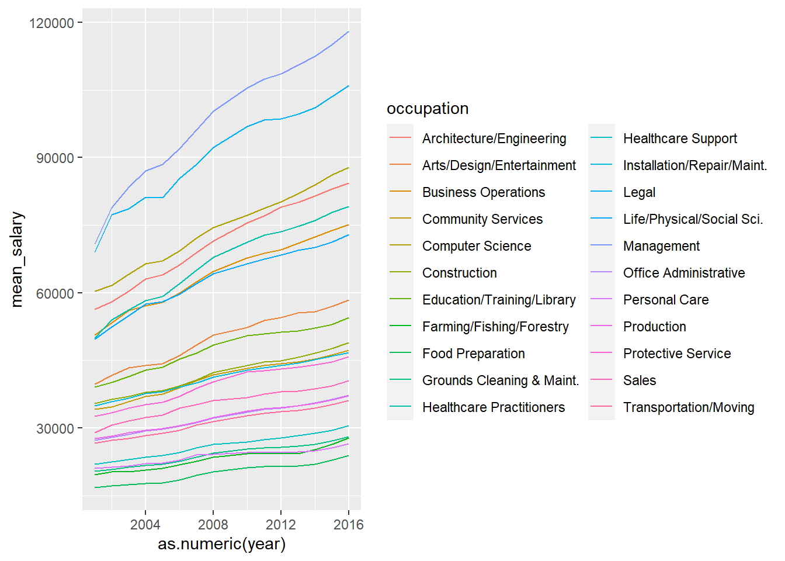
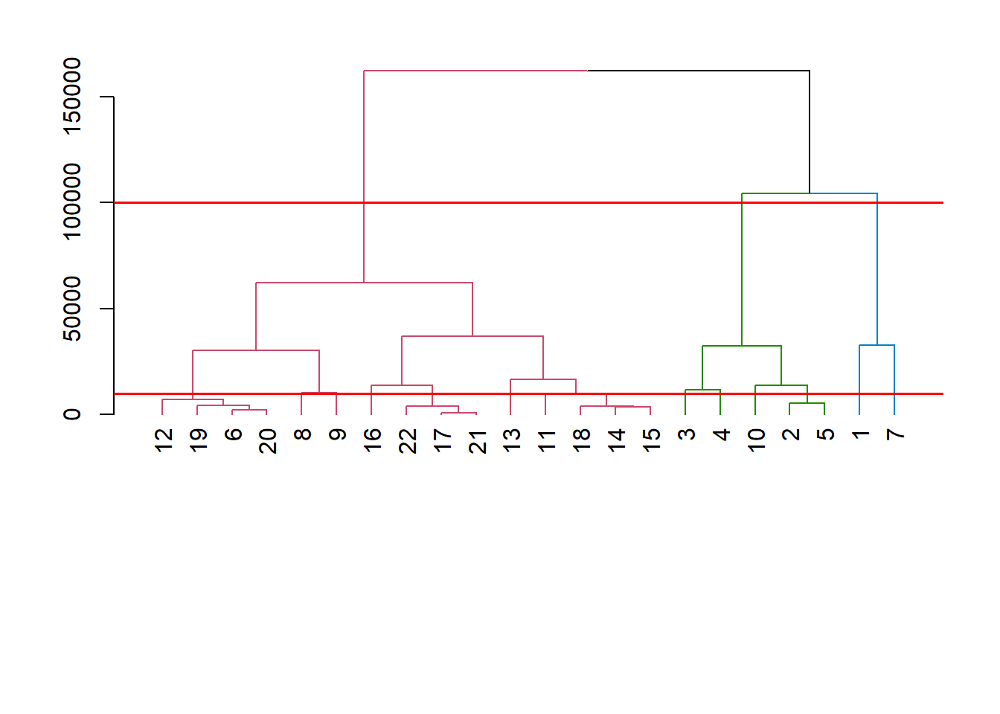
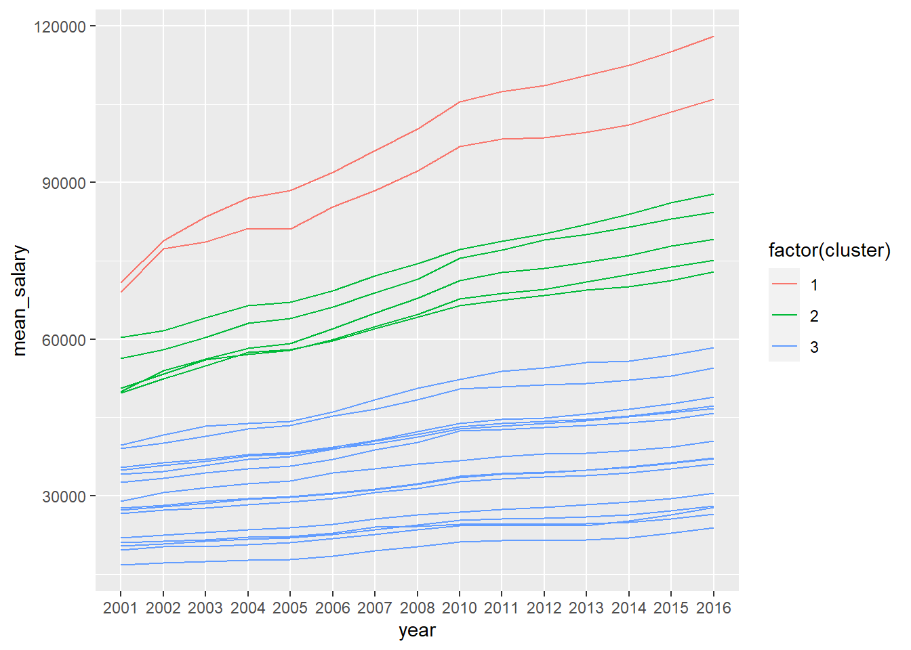
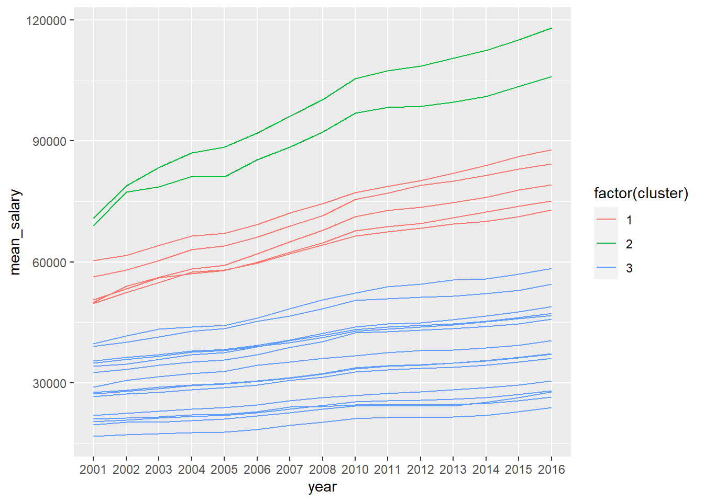
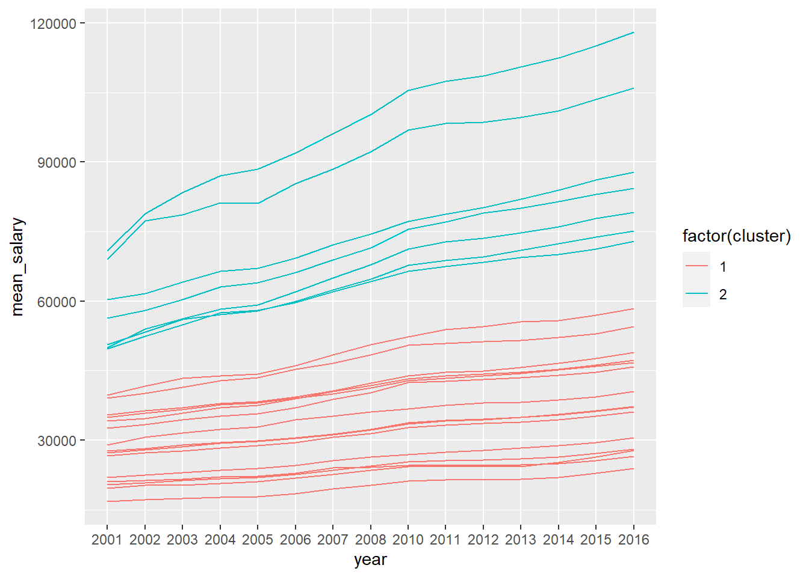

library(tidyverse) # datahåndtering, grafikk og glimpse()
library(skimr) # funksjonen skim() for å se på data
library(rsample) # for å dele data i training og testing
library(dendextend)
library(directlabels)10 Unsupervised learning
I dette kapittelt skal vi bruke følgende pakker:
10.1 Hierarkisk klustering
Exercise 10.1 Last ned filen krim2016.RData fra Canvas. Dette er deler av dataene vi brukte i første seminar med kommunetall. Her er det anmeldt kriminalitet per 1000 innbyggere i kommuner i 2016.
- Gjør en hierarkisk klusteranalsyse. Er det noen kommuner som skiller seg veldig fra de andre? Spiller det noen rolle hvilken type distance du setter?
- Hvilke kommuner er de de klusterne som skiller seg ut?
- Hva kjennetegner lovbruddsbildet i de ulike klustrene? Kan du tenke deg noen grunner til at akkurat disse stikker seg ut?
Solution. Leser inn data om inntektsutvikling for ulike yrker fra 2001 til 2016
Dataene er i “bred” format. Det er slik vi vil ha det for clusteranalyse, men dårlig for å lage en graf.
Code
load("../data/oes.RData")
gathered_oes <- gather(data = df_oes,
key = year,
value = mean_salary,
-occupation)
ggplot(gathered_oes, aes(x=as.numeric(year), y=mean_salary, col = occupation))+
geom_line()
Code
dist_oes <- dist(df_oes[,-1], method = "euclidian") # calculate distances
hc_oes <- hclust(dist_oes, method = "single") # minste avstand
hc_oes <- hclust(dist_oes, method = "complete") # lengste avstand
hc_oes <- hclust(dist_oes, method = "average") #gjennomsnittlig avstand
par(mar=c(10,4,2,2)) # Endre marginer for base-plot
dend_oes <- as.dendrogram(hc_oes) #Create a dendrogram object
dend_colored <- color_branches(dend_oes, h = 100000)
plot(dend_colored)
# Illustrer mulige cutoff - legger linjer oppå eksisterende plot
abline(h=100000, col="red", lwd=1.5) # Viser cut ved h=100000
abline(h=10000, col="red", lwd=1.5) # Viser cut ved h=10000
Code
# Henter ut cluster ved valgt h
cluster <- cutree(hc_oes, h=100000)
#cluster <- cutree(hc_oes, k=3)
table(cluster)cluster
1 2 3
2 5 15 Code
# Legger til vektoren cluster til opprinnelige data
hclust_oes <- mutate(df_oes, cluster = cluster)
head(hclust_oes) occupation 2001 2002 2003 2004 2005 2006 2007 2008
1 Management 70800 78870 83400 87090 88450 91930 96150 100310
2 Business Operations 50580 53350 56000 57120 57930 60000 62410 64720
3 Computer Science 60350 61630 64150 66370 67100 69240 72190 74500
4 Architecture/Engineering 56330 58020 60390 63060 63910 66190 68880 71430
5 Life/Physical/Social Sci. 49710 52380 54930 57550 58030 59660 62020 64280
6 Community Services 34190 34630 35800 37050 37530 39000 40540 41790
2010 2011 2012 2013 2014 2015 2016 cluster
1 105440 107410 108570 110550 112490 115020 118020 1
2 67690 68740 69550 71020 72410 73800 75070 2
3 77230 78730 80180 82010 83970 86170 87880 2
4 75550 77120 79000 80100 81520 82980 84300 2
5 66390 67470 68360 69400 70070 71220 72930 2
6 43180 43830 44240 44710 45310 46160 47200 3Code
# vrenger dataene "nedover" for å plotte
gathered_oes <- gather(data = hclust_oes, # datasett
key = year, # navn på ny variabel, verdier hentes fra gamle variabelnavn
value = mean_salary, # navn på ny variabel med gamle variabelverdier
-occupation, -cluster) # variable som skal beholdes / grupperes etter
ggplot(gathered_oes, aes(x = year, y = mean_salary, color = factor(cluster), group = occupation)) +
geom_line()
10.2 K-means klustering
Exercise 10.2 Gjenta analysen over med k-means clustering. Hvor mange klustre bør det være? Får du samme resultat?
Solution.
Code
## K-means clustering med samme data
# Eksempel ved å sette antall kluster til 3
# I dette tilfellet bør vi få samme resultat
km_oes <- kmeans(dist_oes, centers = 3)
table(km_oes$cluster)
1 2 3
8 7 7 Code
kmclust_oes <- mutate(df_oes, cluster=km_oes$cluster)
# Plotter
gathered_kmoes <- gather(data = kmclust_oes, # datasett
key = year, # navn på ny variabel, verdier hentes fra gamle variabelnavn
value = mean_salary, # navn på ny variabel med gamle variabelverdier
-occupation, -cluster) # variable som skal beholdes / grupperes etter
ggplot(gathered_kmoes, aes(x = year, y = mean_salary, color = factor(cluster), group = occupation)) +
geom_line()
Code
### K-means clustering. Make a search
wss <- 0
# For 1 to 15 cluster centers
for (i in 1:5) {
km.out <- kmeans(dist_oes, centers = i, nstart=20)
# Save total within sum of squares to wss variable
wss[i] <- km.out$tot.withinss
}
# Plot total within sum of squares vs. number of clusters
plot(1:5, wss, type = "b",
xlab = "Number of Clusters",
ylab = "Within groups sum of squares")
# Marker "albuen" med en linje i plottet
abline(v=2, col="red")
Code
oes <- readRDS("../data/oes.rds")
## Create final clustering
km_oes <- kmeans(oes, centers = 2, nstart=20)
table(km_oes$cluster)
1 2
7 15 Code
kmclust_oes <- mutate(df_oes, cluster=km_oes$cluster)
gathered_kmoes <- gather(data = kmclust_oes, # datasett
key = year, # navn på ny variabel, verdier hentes fra gamle variabelnavn
value = mean_salary, # navn på ny variabel med gamle variabelverdier
-occupation, -cluster) # variable som skal beholdes / grupperes etter
ggplot(gathered_kmoes, aes(x = year, y = mean_salary, color = factor(cluster), group = occupation)) +
geom_line()
10.3 Datareduksjon med principal component analysis (PCA)
10.3.1 Multippel korrespondanseanalyse
PCA har egentlig som forutsetning av variablene er kontinuerlige, og det er litt trøblete å bruke det på kategoriske variable. Men ofte har vi kategoriske variable.
En variant av PCA for kategoriske variable er korrespondanseanalyse, som i teorien altså skal være bedre enn PCA. I praksis er det imidlertid ikke nødvendigvis veldig stor forskjell (REF), så det er neppe stor skade skjedd hvis man bruker PCA likevel.